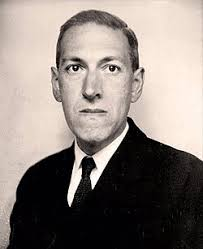

Lovecraft ha dejado un gran legado de obras y a dado inspiración a un gran numero de escritores.
Sus obras, o también conocido como El Mundo de Lovecraft , se han representados en videojuegos, películas, comics.
Por ejemplo:
 Este es un juego basdo en su obra la Llamada de Cthulhu